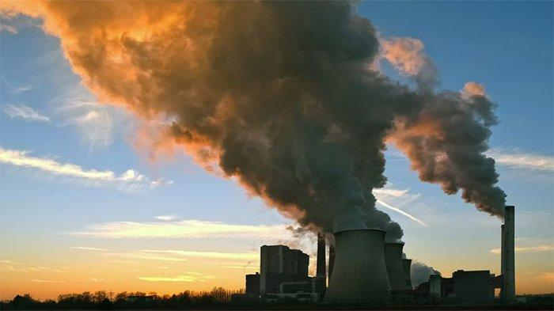

Causas
Las causas de los cambios climáticos se pueden dividir en aquellas relacionadas con los procesos naturales y las causas vinculadas con las actividades humanas.
De acuerdo al Panel Intergubernamental de Expertos sobre el Cambio Climático (IPCC, por sus siglas en inglés), la influencia humana en el sistema climático es clara y las recientes emisiones de gases de efecto invernadero, derivadas principalmente del crecimiento económico y demográfico, son son las más altas en por lo menos los últimos 800,000 años, lo que junto con otros factores antropógenos, han provocado el proceso de cambio climático actual.

El efecto invernadero
El efecto invernadero es un proceso que ocurre de manera natural en la atmósfera de la Tierra, y resulta de la interacción entre la energía que proviene del Sol y algunos de los gases de la atmósfera, llamados gases de efecto invernadero (GEI).
El efecto invernadero natural permite que exista la vida tal y como la conocemos en el planeta, pues sin él, la temperatura promedio de la Tierra sería inferior a los -18 °C.
La atmósfera está compuesta principalmente por Nitrógeno (78%) y Oxígeno (21%) y sólo en un 1% por otros componentes, entre ellos los GEI.
El vapor de agua (H2O), dióxido de carbono (CO2), óxido nitroso (N2O), metano (CH4) y ozono (O3) son los principales GEI en la atmósfera terrestre, los cuales, tienen la capacidad de actuar retener el calor emitido por la Tierra después de haber sido calentada por el Sol.
La mayoría de los gases de efecto invernadero siempre han existido en la atmósfera y su ciclo es parte de procesos naturales:
| ant | menu | sig |
|---|
| video |
|---|